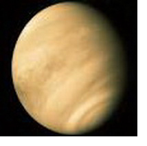

|
Меркурий в гороскопе
Венера в знаках зодиака оказывает огромное влияние на наше поведение, связь с другими людьми, с собственными желаниями, предметами, окружающим миром.
Венера – отвечает за восприятие мира не умом, а с помощью чувств.
Это то, что мы любим и кого мы любим, что нам нравиться и кто нам нравиться, что нам хочется.
Это наша оценка окружающего мира, наши эмоциональные и любовные связи, тесные связи с близкими, наше отношении к чувственному, сексуальному, романтическому и прекрасному.
Знак Венеры указывает на энергетику и стиль эмоционального самовыражения в межличностных контактах, а также раскрывает отношение индивида к любви, близким отношениям и эмоциональной открытости. Он показывает, что индивиду особенно приятно, и, таким образом, многое говорит об источниках радостей в жизни.
Например, Венера в Скорпионе может радоваться жизни, только если переживает сильные чувства; Венере в Овне удовольствие доставляют новые испытания; Венеру в Водолее влекут большие группы людей, политика, движения за социальные перемены, революционные идеи и т. д.
Характеристика Венеры в Скорпионе представлена ниже:
Меркурий в Скорпионе
В любви вы стремитесь к глубокому, интенсивному, страстному союзу с любимым человеком и устанавливаете прочные связи и привязанности. Еще до женитьбы (замужества) и без женитьбы вы уже женитесь. Это происходит на глубоком эмоциональном уровне. Часто вы оказываетесь деспотичным собственником, диктатором, предъявляющим полные права на любимого человека, нетерпимым к любой угрозе в отношении своего союза. Вы можете быть очень требовательны по отношению к любимому человеку. Вам свойственно быть до известной степени подозрительным или подозрительной в случаях чисто платонических, дружеских отношений, которые любимый человек устанавливает с другими. Если хоть раз вас предали, вы способны на ненависть такой же силы и интенсивности, с какой до этого вы любили. Вас влечет к людям, окруженным загадочностью. У вас глубокие эмоции и очень сильные и страстные сексуальные желания. Вы склонны к ревности, таинственности и с трудом понимаете чувства других людей. Можете быть большим идеалистом, верующим и даже мистиком. Поскольку ваши действия интенсивны, вы глубоко отчаиваетесь, если люди не отвечают на ваши чувства, и любовь у вас легко превращается в ненависть. Даже к искусству вы относитесь драматично. Ваше поведение таинственно, и вы редко теряете чувство собственного достоинства. Если есть вызывающие аспекты, вы чувствуете неуверенность и можете проявлять сексуальную озабоченность, эгоизм и даже жестокость.
|


 Тайна имени
Тайна имени Венера в знаке Скорпион
Венера в знаке Скорпион